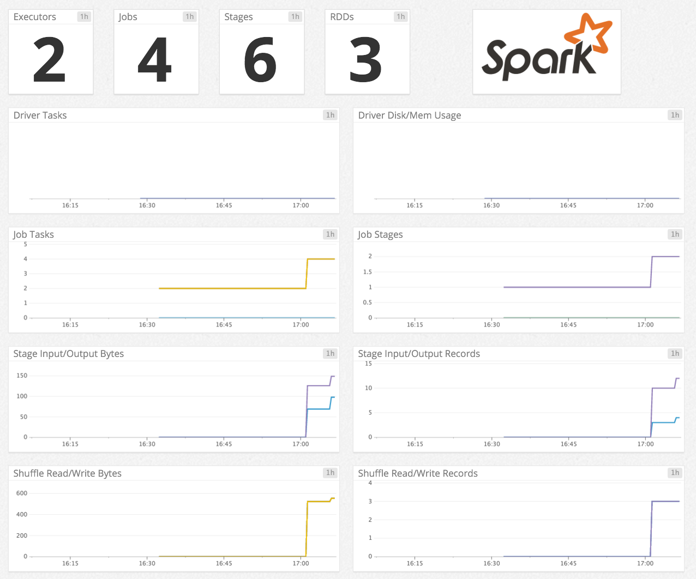

Spark
Get metrics from your app in real time to

Install Datadog Agent on the Master Node where the ResourceManager is running
conf.d/%s.yaml' % agent_name)}
init_config:
instances:
#
# The Spark check retrieves metrics from YARN's ResourceManager. This
# check must be run from the Master Node and the ResourceManager URI must
# be specified below. The ResourceManager URI is composed of the
# ResourceManager's hostname and port.
#
# The ResourceManager hostname can be found in the yarn-site.xml conf file
# under the property yarn.resourcemanager.address
#
# The ResourceManager port can be found in the yarn-site.xml conf file under
# the property yarn.resourcemanager.webapp.address
#
- resourcemanager_uri: http://localhost:8088
# An optional friendly name can be specified for the cluster.
# cluster_name: MySparkCluster
# Additional tags can be specified for the metrics.
# tags:
# - optional_tag1
# - optional_tag2
Checks
======
[...]
spark
-----
- instance #0 [OK]
- Collected 0 metrics, 0 events & 2 service checks